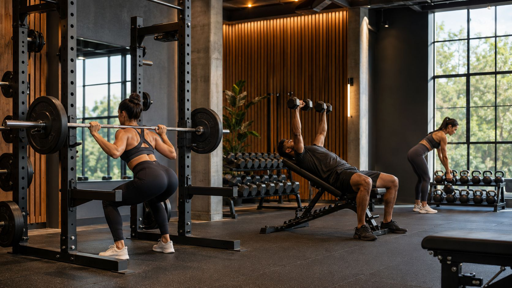
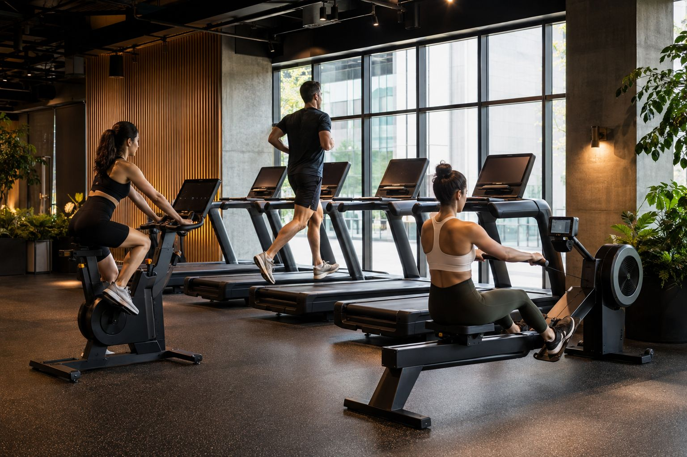
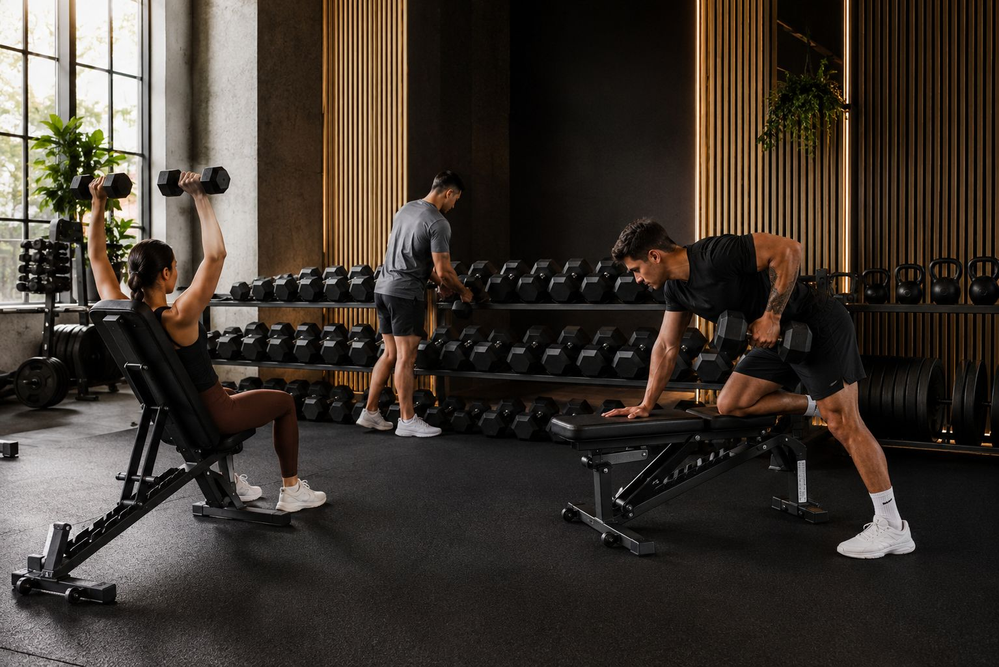
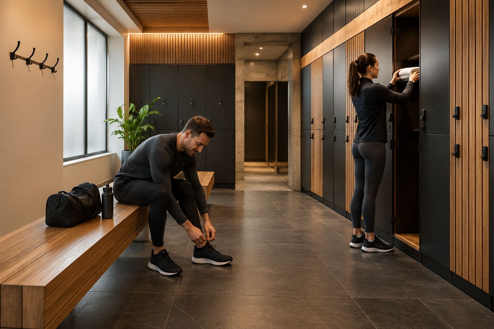
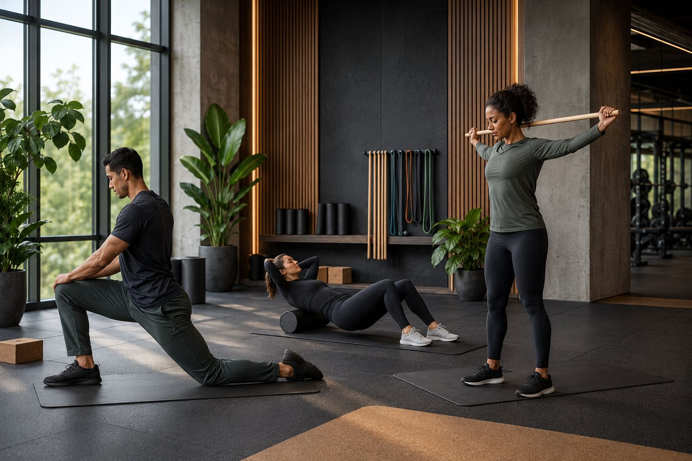
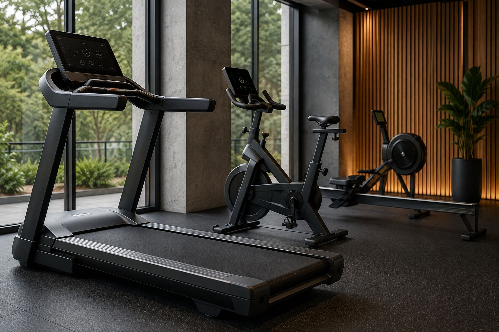

Strength Zone
Voor krachtwerk, progressieve overload en duidelijke opbouw.

Gym & equipment
Zones, materiaal en looplijnen zijn op elkaar afgestemd zodat leden zich snel op hun training kunnen richten.
Faciliteiten

Voor krachtwerk, progressieve overload en duidelijke opbouw.

Ruimte voor tempo, intervalwerk en conditionering.

Voor coördinatie, vrije beweging en technische variatie.

Vrije gewichten en basisbewegingen blijven centraal aanwezig.

Praktische voorzieningen voor een soepele start en afsluiter.

Voor warming-up, cooling-down en rustige voorbereiding.
Equipment
De equipment-zone is compact maar volledig genoeg voor een breed scala aan trainingsvormen. We kiezen toestellen en hulpmiddelen die passen bij het prestatiegerichte karakter van de studio.
Dit helpt om de workflow helder te houden en de focus op kwaliteit van uitvoering te leggen.
